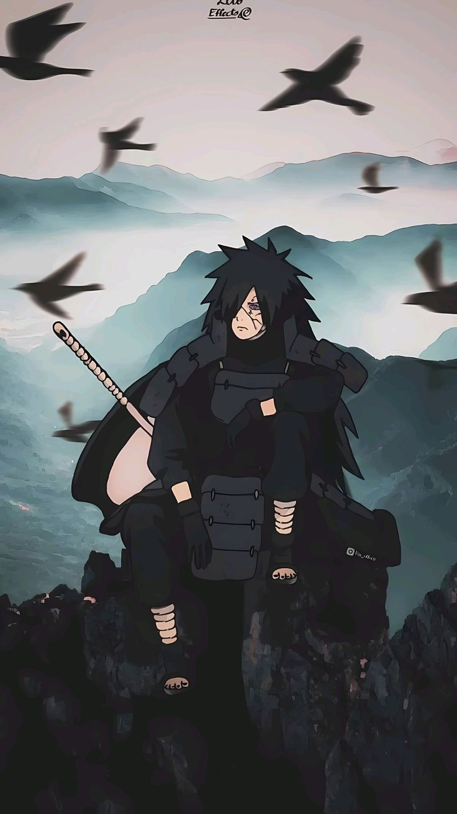

Madara Uchiha is one of the most legendary and powerful characters in Naruto, known as a founding member of the Hidden Leaf Village and one of the greatest leaders of the Uchiha clan. He was a rival and friend of Hashirama Senju, and their clash shaped the entire shinobi world. Madara was a prodigy with immense chakra and combat ability, mastering the Sharingan and later awakening the Mangekyō Sharingan and Rinnegan. His abilities include powerful fire-style jutsu, the perfect Susanoo (a massive armored warrior capable of destroying mountains), and advanced techniques like meteor summoning. His strength and battlefield presence were so overwhelming that he could defeat entire armies alone.
Philosophically, Madara believed the world was trapped in endless conflict and that true peace could only be achieved through control. He created the Eye of the Moon Plan, aiming to cast the Infinite Tsukuyomi and place everyone in a dream world without pain. He manipulated events from the shadows for decades, influencing characters like Obito Uchiha to carry out his vision.
Madara Uchiha from Naruto has a dominant, proud, and highly complex personality shaped by war and betrayal. He is extremely confident—often bordering on arrogant—and believes strongly in his own power and vision. As a natural leader of the Uchiha clan, Madara is charismatic and commanding, capable of inspiring loyalty while also instilling fear in his enemies.
In his early life, Madara desired peace and formed a bond with Hashirama Senju, but repeated conflict and loss caused him to lose faith in the world. This led him to develop a cynical and controlling worldview, believing that true peace could only exist through absolute power and illusion. He became emotionally distant, ruthless, and willing to manipulate others to achieve his goals.
Madara Uchiha from Naruto possesses some of the most overwhelming abilities in the entire series, making him one of the strongest shinobi ever. His power begins with the Sharingan, which evolves into the Mangekyō Sharingan, granting him incredible perception, genjutsu, and the ability to use Susanoo. Madara’s Perfect Susanoo and powerful enough to slice mountains and dominate entire battlefields. He is also a master of fire-style jutsu, capable of unleashing massive flames that can overwhelm armies, and his combat skills, speed, and chakra reserves are on a legendary level. After awakening the Rinnegan, Madara gains access to abilities like gravitational control, chakra absorption, and summoning meteors from the sky, devastating everything in their path.
Madara also possesses Hashirama Senju’s cells, granting him regeneration and Wood Style techniques, further enhancing his versatility and durability. At his peak, he becomes the Ten-Tails’ Jinchūriki, gaining god-like powers such as flight, Truth-Seeking Orbs, immense strength, and near invincibility. Combined with his intelligence and battle experience, Madara stands as one of the most unstoppable forces in the ninja world.

Madara Uchiha from Naruto devoted his life to a single overarching mission: achieving true and lasting peace in a world he believed was trapped in endless conflict. After experiencing constant war and losing faith in humanity, Madara created the Eye of the Moon Plan, a grand strategy to cast the Infinite Tsukuyomi over the entire world. This genjutsu would trap everyone in a dream-like illusion where there is no pain, suffering, or war. To accomplish this mission, Madara secretly manipulated events from the shadows for decades. He awakened the Rinnegan, orchestrated plans for his own revival, and passed his will onto Obito Uchiha, who continued the plan in his place. Madara’s influence also indirectly shaped the formation and actions of the Akatsuki, using it as a tool to gather tailed beasts needed to revive the Ten-Tails.
During the Fourth Great Ninja War, Madara returns to life and takes direct control of the battlefield, eventually becoming the Ten-Tails’ Jinchūriki to complete his plan. Although his methods were extreme and destructive, his mission was always rooted in his belief that only through illusion and control could true peace exist, making him a tragic yet formidable figure.
Madara Uchiha never officially “joined” the Akatsuki in Naruto—instead, he was the mastermind working behind the scenes. Long before the Akatsuki became a criminal organization, Madara had already set his plan in motion to achieve the Infinite Tsukuyomi and reshape the world.
Before his death, Madara entrusted his mission to Obito Uchiha, manipulating him into carrying out the Eye of the Moon Plan. Obito, under the identity of “Tobi,” later infiltrated and took control of the Akatsuki, turning it into a tool for Madara’s vision. Through Obito’s actions, the Akatsuki began capturing tailed beasts and spreading chaos across nations.